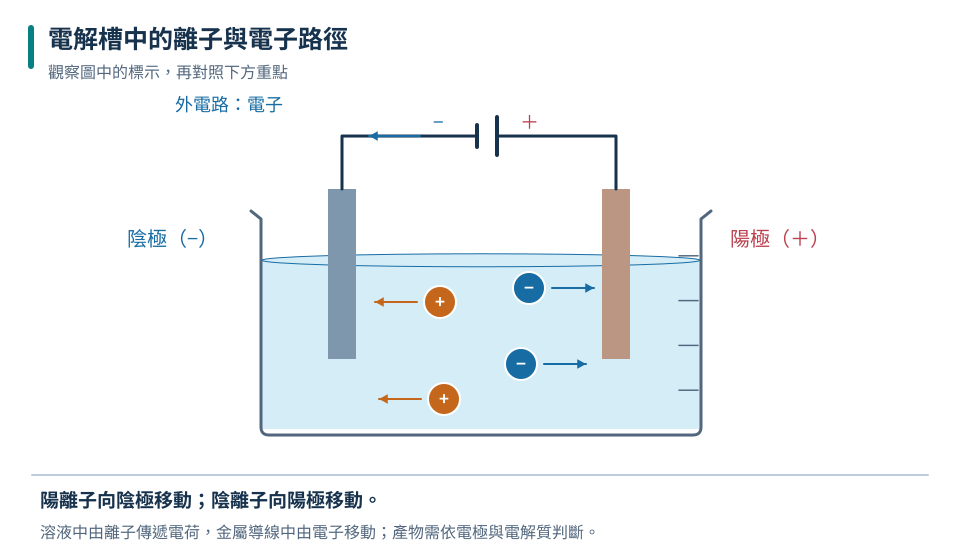
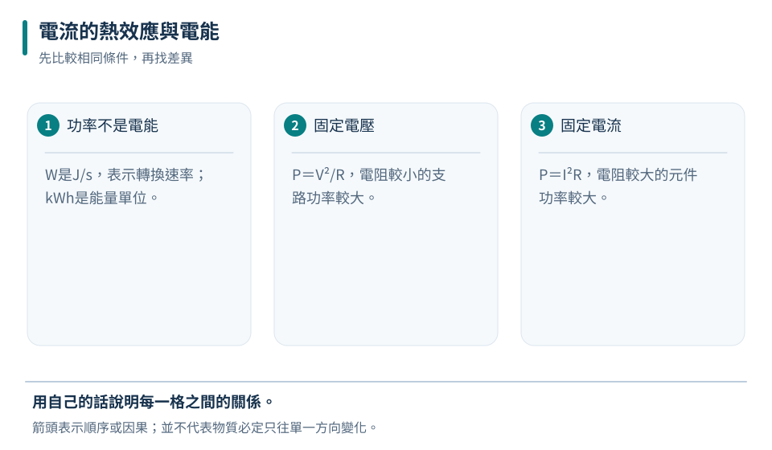
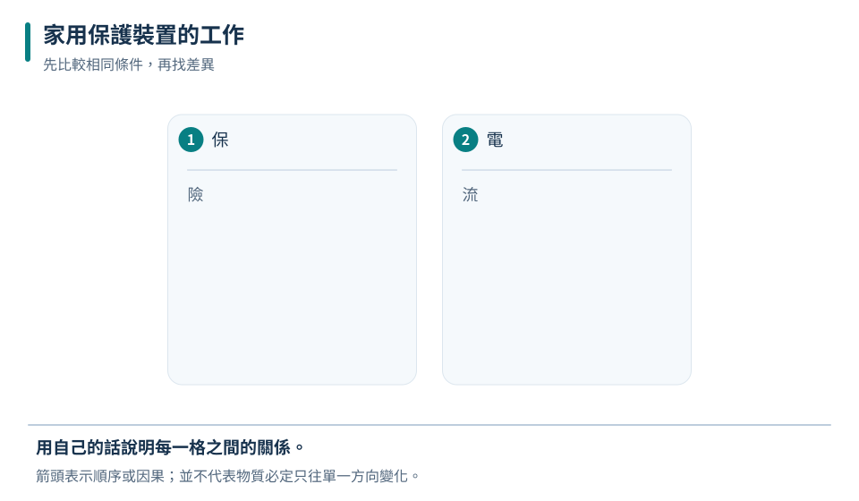

溶液內的載流者
正負離子朝相反方向移動，兩者都能貢獻電流。
九下 · 理化 · 第 1 章
電流能驅動化學反應、產生熱，也支撐家中每一部電器。本章從電解與電鍍的粒子移動開始，用功率和電能計算用電量，再讀懂並聯家用電路、保險絲、接地與漏電保護的作用，建立可真正用在生活中的安全判斷。
先備概念：會判讀電流、電壓與電阻、知道串聯與並聯電路的基本規則、能進行W、kW、h的單位換算
LEARN & EXPLAIN
電解質溶液中有可移動的正、負離子。接上直流電源後，正離子朝負極移動，負離子朝正極移動，並可能在電極表面得到或失去電子，形成新物質。電子在外部金屬導線中移動，溶液內主要由離子移動傳遞電流；不能把電子想成自由穿越整杯水溶液。
電鍍是電解的應用：要被鍍的物體通常接負極，讓金屬正離子在其表面獲得電子而沉積。電極材料、電解液、電流與時間都會影響結果。電鍍不是把電鍍液的顏色「染」上去；若要比較鍍層質量，應清潔、乾燥後稱量，並控制浸入面積和電流。
正負離子朝相反方向移動，兩者都能貢獻電流。
離子可在電極得失電子，生成金屬或氣體等物質。
教室實驗使用低壓直流電源；不可拿家用插座進行電解。

正離子朝負極、負離子朝正極；實際產物須由離子種類及電極材料判定。
待鍍物接負極是為了讓金屬正離子在其表面還原沉積。
正離子移向負極不表示「負極帶走所有正電」；整體電路中的電荷流動與電極反應共同維持電流。
LEARN & EXPLAIN
電流通過具有電阻的元件時，電能可轉成內能，稱為電流的熱效應。電功率表示每秒轉換多少電能，P＝VI；對固定電阻也可配合V＝IR推得P＝I²R或P＝V²/R。使用哪個形式要看保持固定的條件，不能只看到電阻變大就武斷說功率一定變大。
電能E＝Pt。家庭用電常以千瓦小時（kWh）計量，1 kWh俗稱1度電，等於1000 W的電器使用1小時。電費還可能依級距、季節及其他規則計算，教材中的單一每度價格只是估算模型。電器標示功率通常是額定條件下的數值，實際耗電還受運轉時間和控制方式影響。
W是J/s，表示轉換速率；kWh是能量單位。
P＝V²/R，電阻較小的支路功率較大。
P＝I²R，電阻較大的元件功率較大。
| 電器 | 標示功率 | 使用時間 | 電能 |
|---|---|---|---|
| LED燈 | 10 W | 5 h | 0.05 kWh |
| 吹風機 | 1200 W | 0.5 h | 0.60 kWh |
| 冰箱平均 | 80 W | 24 h | 1.92 kWh |

功率小但時間長，也可能累積較多電能；冰箱實際功率會隨壓縮機啟停變化。
約30度電；若假設每度3元，電能費約90元。
「1500 W」是功率而非每小時固定付費；還要乘上實際運轉時間才能得到電能。
LEARN & EXPLAIN
家庭電器以並聯方式接在火線與中性線之間，使各電器得到相同額定電壓，且能獨立開關。多台高功率電器同時使用時，總電流會相加；若超過導線與迴路容許值，導線可能過熱。保險絲或斷路器要串聯在火線側，過流時切斷電路，額定值不可任意換得過大。
接地線為金屬外殼提供低阻抗故障路徑，使漏電時保護裝置較容易動作；漏電斷路器偵測流出與返回電流的不平衡，能快速切斷。它們不能取代乾燥操作、完整絕緣與正確容量。人體觸電風險和電流路徑、大小與時間有關；潮濕會降低皮膚電阻。發現電線走火先切斷電源並用適當滅火方式，不可直接潑水。
每支路電壓相同；總電流等於各支路電流和。
過載是用電總電流過大；短路是形成極低電阻路徑，兩者都可能過熱。
絕緣與正確操作、接地、過流與漏電保護各有功能。

接地線,外殼漏電時提供故障電流路徑，降低外殼維持危險電位的機會。
總電流約22 A；若迴路額定20 A，已可能過載，應停止並重新分配合格迴路。
延長線插孔多不等於可承受更大總功率；必須看線材與迴路的額定電流。
TRY, OBSERVE, EXPLAIN
REVIEW
正負離子朝相反方向移動，兩者都能貢獻電流。
回到這一節複習W是J/s，表示轉換速率；kWh是能量單位。
回到這一節複習每支路電壓相同；總電流等於各支路電流和。
回到這一節複習CHAPTER TEST
先獨立作答，再看解析。中難與難為編者估計，尚未經學生實測校準。